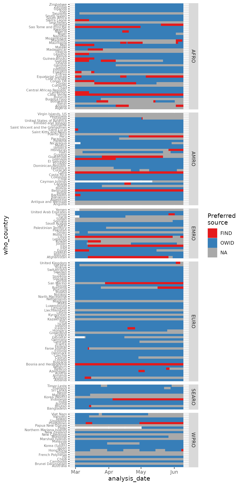
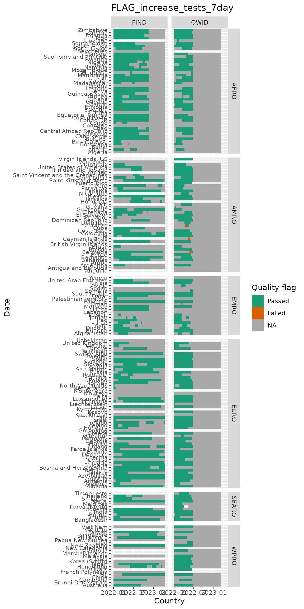
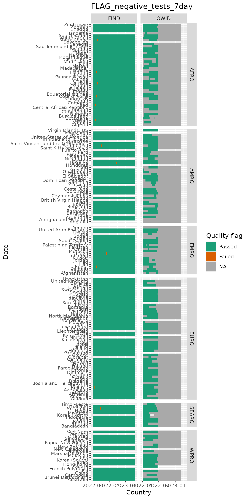
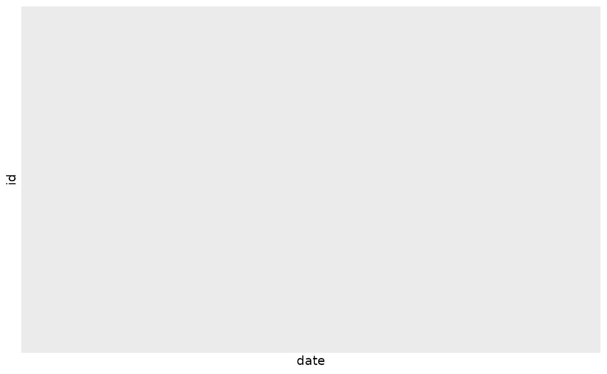

Overview
There are two main sources for testing data that we use: Our World in Data (OWID) and FIND. Both are compiling data from various sources to put together their datasets. Briefly, information on tests can be used in several different ways: tests per 1000 persons in a population (relevant for assessing whether the surveillance is sufficient) and test positivity rate (positive samples divided by number of tests for some time period), and variations on these, such as tests per case.
Note that Our World in Data will no longer be updating after June 23, 2022!
Therefore, these methods apply to historical data from both these data sources, but for prospective data, these functions will return data from FIND.
The purpose of this document is to give some explanation of the two datasets and some of the approaches we have taken in extracting relevant metrics from each source for various projects.
Briefly, for each country we look back 14 days to find the most recent 7-day average of new daily tests per 1K persons and the recent test positivity rate (7-day number of positives or cases divided by 7-day number of tests). We document which countries do not have recent data; we also document which countries have recent data that has a quality flag due to FIND or OWID reporting irregularities in some of the numbers (e.g., total number of tests decreasing or suddenly jumping by a large amount).
Getting started with the testing data
To directly get a dataset with all countries and data from the preferred source based on the flags described in detail below:
testing_processed <- get_testing()
testing_processed## # A tibble: 0 × 5
## # ℹ 5 variables: id <chr>, date <date>, new_tests_smoothed_per_thousand <dbl>,
## # new_tests_smoothed_per_thousand_14 <dbl>, positive_rate <dbl>get_testing() uses the SaviR functions
get_testing_long() and
get_preferred_testpos7() under the hood. This means that
the preferred source is selected based on flags applied to test numbers
and test positivity.
In addition, you can pull data in from both sources directly:
testing_long <- get_testing_long()
testing_long## # A tibble: 420,009 × 38
## data_source id date population total_tests_original
## <chr> <chr> <date> <dbl> <dbl>
## 1 FIND AFG 2020-01-22 38928000 NA
## 2 FIND AFG 2020-01-23 38928000 NA
## 3 FIND AFG 2020-01-24 38928000 NA
## 4 FIND AFG 2020-01-25 38928000 NA
## 5 FIND AFG 2020-01-26 38928000 NA
## 6 FIND AFG 2020-01-27 38928000 NA
## 7 FIND AFG 2020-01-28 38928000 NA
## 8 FIND AFG 2020-01-29 38928000 NA
## 9 FIND AFG 2020-01-30 38928000 NA
## 10 FIND AFG 2020-01-31 38928000 NA
## # ℹ 419,999 more rows
## # ℹ 33 more variables: new_tests_original <dbl>, total_tests_int <dbl>,
## # new_tests_int <dbl>, new_tests_daily7 <dbl>, new_tests_daily7_prev <dbl>,
## # new_tests_daily7_per_1k <dbl>, new_tests_daily7_per_1k_prev <dbl>,
## # new_tests_daily14 <dbl>, new_tests_daily14_prev <dbl>,
## # new_tests_daily14_per_1k <dbl>, new_tests_daily14_per_1k_prev <dbl>,
## # new_cases_original <dbl>, new_cases_daily7 <dbl>, …To get the preferred data source for each country by date directly, using both test numbers and test positivity lagged seven days from the observation date:
preferred_source <- get_preferred_testpos7(testing_long)
preferred_source## # A tibble: 199 × 58
## id preferred_source preferred_recent_date positive_rate positive_rate_prev
## <chr> <chr> <date> <dbl> <dbl>
## 1 AFG NA NA NA NA
## 2 AGO NA NA NA NA
## 3 AIA NA NA NA NA
## 4 ALB NA NA NA NA
## 5 AND NA NA NA NA
## 6 ARE NA NA NA NA
## 7 ARG NA NA NA NA
## 8 ARM NA NA NA NA
## 9 ATG NA NA NA NA
## 10 AUS NA NA NA NA
## # ℹ 189 more rows
## # ℹ 53 more variables: new_tests_daily7 <dbl>, new_tests_daily7_prev <dbl>,
## # new_tests_daily7_1k <dbl>, new_tests_daily7_1k_prev <dbl>,
## # flag_negative_tests_previous7 <dbl>, flag_increase_tests_previous7 <dbl>,
## # flag_negative_cases_previous7 <dbl>, owid_date <date>,
## # owid_new_cases <dbl>, owid_new_cases_daily7 <dbl>,
## # owid_total_tests_orig <dbl>, owid_total_tests_int <dbl>, …Or just using test numbers over the past 14 days:
preferred_source_14 <- get_preferred_tests14(testing_long)You can also change the date lookback over which the flags are
applied using the argument last_X_days and change the
maximum date for which to return data using
analysis_date:
preferred_source_custom <-
get_preferred_testpos7(testing_long, last_X_days = 10, analysis_date = as.Date("2021-03-01"))To filter testing_long to the data from the preferred
source for the most recent 7 days of data for each country:
preferred_testing <-
testing_long %>%
left_join(preferred_source %>%
select(id, preferred_source), by = "id") %>%
filter(data_source == preferred_source)
preferred_testing## # A tibble: 0 × 39
## # ℹ 39 variables: data_source <chr>, id <chr>, date <date>, population <dbl>,
## # total_tests_original <dbl>, new_tests_original <dbl>,
## # total_tests_int <dbl>, new_tests_int <dbl>, new_tests_daily7 <dbl>,
## # new_tests_daily7_prev <dbl>, new_tests_daily7_per_1k <dbl>,
## # new_tests_daily7_per_1k_prev <dbl>, new_tests_daily14 <dbl>,
## # new_tests_daily14_prev <dbl>, new_tests_daily14_per_1k <dbl>,
## # new_tests_daily14_per_1k_prev <dbl>, new_cases_original <dbl>, …And to generate the same metrics as get_testing given
preferred source information generated by either
get_preferred_testpos7 and
get_preferred_tests_14.
testing_cleaned <-
preferred_testing %>%
group_by(id) %>%
arrange(date) %>%
mutate(
new_cases_daily7 = zoo::na.locf(new_cases_daily7, na.rm = F, maxgap = 14),
new_tests_daily7 = zoo::na.locf(new_tests_daily7, na.rm = F, maxgap = 14) ,
new_tests_smoothed_per_thousand = zoo::na.locf(new_tests_daily7_per_1k, na.rm = F, maxgap = 14),
positive_rate = zoo::na.locf(positive_rate_7day, na.rm = F, maxgap = 14)
) %>%
ungroup()Quality and availability of data by source and country
Looking at which data source is preferred over time and by country historically:
# taking a look at slice of historical data
ytd <- seq.Date(as.Date("2022-03-01"),
as.Date("2022-06-09"), by = 1)
preferred_timeseries <-
purrr::map_dfr(
ytd,
~get_preferred_testpos7(testing_long, analysis_date = .x) %>%
mutate(analysis_date = .x)
) %>%
left_join(select(SaviR::onetable, id, who_region, who_country)) ## Joining with `by = join_by(id)`
preferred_timeseries %>%
filter(!is.na(who_region)) %>%
ggplot(aes(y = who_country, x = analysis_date, fill = preferred_source)) +
geom_tile() +
scale_fill_brewer(palette = "Set1", na.value = "darkgrey", name = "Preferred\nsource") +
theme(axis.text.y = element_text(size = 6)) +
facet_grid(who_region ~ ., scales = "free_y", space = "free_y")
There are some countries with switching between data sets and some countries where data either is missing or both data sources failed the quality flags.
Looking at flags over time (focusing on the flags used in
get_preferred_testpos7:
test_flags_recent <-
testing_long %>%
left_join(select(SaviR::onetable, id, who_region, who_country)) %>%
filter(date > "2022-01-01") %>%
select(data_source, id, who_region, who_country, date, starts_with("FLAG")) %>%
tidyr::pivot_longer(starts_with("FLAG")) ## Joining with `by = join_by(id)`
test_flags_recent %>%
filter(name %in% c("FLAG_increase_tests_7day", "FLAG_negative_tests_7day", "FLAG_negative_cases_7day")) %>%
group_by(date, data_source, name, who_region) %>%
summarize(n_countries_flagged = sum(value %in% 1)) %>%
ggplot() +
geom_col(aes(x = date, y = n_countries_flagged, fill = who_region), width = 0.2,
position = "stack") +
facet_grid(data_source ~ name)## `summarise()` has grouped output by 'date', 'data_source', 'name'. You can
## override using the `.groups` argument.Overall few days and countries fail the quality flags for either dataset (and no failures for the flag on 7 day cases).
Looking at flags over time & by country (in these plots white indicates missing and grey indicates an NA value):
c("FLAG_increase_tests_7day", "FLAG_negative_tests_7day") %>%
purrr::set_names() %>%
purrr::map(
~test_flags_recent %>%
filter(name %in% .x, !is.na(who_region)) %>%
ggplot(aes(x = date, y = who_country, fill = factor(value))) +
geom_tile() +
scale_fill_brewer(palette = "Dark2", labels = c("Passed", "Failed"),
na.value = "darkgrey", name = "Quality flag") +
labs(x = "Country", y = "Date",
title = .x) +
facet_grid(who_region ~ data_source, scales = "free_y", space = "free_y") +
theme(axis.text.y = element_text(size = 8))
)
Summary of testing data processing
-
For each data source, we do the following:
We interpolate the cumulative number of tests, and calculate the new daily tests and the 7-day average of new daily tests based on this interpolated metric.
The maximum number of days we allow between two cumulative testing values for interpolation is 31 days(note that this can be changed by the param
find_maxgapin `get_testing_long). Test positivity is based on the ratio of 7-day average of new daily cases (from JHU) to 7-day average of new daily tests.FIND scrapes websites and testing data sources once daily for a given date, thus if the original source does not update, the scraped value is the same. To be precise, if a the scraped cumulative test number has not changed on subsequent days, we interpret this as no update to the number of tests (that is, the original value from FIND provided for “new tests” is 0). To interpolate in a consistent manner across the two datasets, we first only consider an update to have occurred if the cumulative testing number has actually changed. So if the values are recorded as 90, 100, 100, 100, 100, 200 for Sunday through Friday, respectively, the interpolated series would be 90, 100, 125, 150, 175, 200.
For a handful of countries,OWID is able to get the test positivity rate directly from the same source as number of tests, and we use this pre-computed value for the positivity rate in these cases as it may be more reliable.
For each data source, we extract the most recent available data point in the past 14 days for the 7-day average of new daily tests per 1000 and the test positivity rate.
We flag the data point if in the 7 days used for the calculation there was a drop in the total number of tests, there was a sudden increase in the number of tests suggesting a reporting anomaly (currently set to 5% daily increase in the interpolated number of total tests), or there was a decrease in the total number of cases (with exceptions for a small number countries in OWID where the test positivity rate is not based on this number).
We examine countries with recent data points (in the last 14 days) and with no quality flags.
Among these countries, if a country/area has data points in both FIND and OWID, we select OWID.
If a country has data, but none that pass the quality flags, the preferred data source is set to NA.
We report the recent values for each country/area along with the preferred data source. Note that, it’s plausible that one week to the next, the preferred data source for a country could shift between FIND and OWID.
More details on flags
As mentioned, we attempt to flag the following instances for implausibility to prevent bad quality data from being reported:
-
Flag for negative values in new daily cases: Did total cases drop (perhaps due to revision) in the 7 days used for the calculation of the test positivity rate? If so, we flag this country/area, as the calculation of test positivity would be impacted by erroneous calculation of the denominator.
Note this only impacts the risk matrix approach, where we look at test positivity. Furthermore, for some countries in OWID, we do not use this flag at all, as the test positivity rate is not calculated from JHU case data, but rather it is taken directly from the same source providing the number of tests.
Note that currently, no flags are generated for FIND on this variable. Their dataset reports a
new_cases_origvariable and it appears to never be negative – likely there is some handling of negative values by FIND before including it. We will investigate this and consider whether we should import our own JHU case data separately, so that we can generate create our own adjustments to new cases.
Flag for drops in the cumulative number of tests: Did the total number of tests drop (perhaps due to revision) in the 7 or 14 days used for the calculations of the metrics? If so, we flag these values.
Flag for an implausible increase in the total number of tests: Did total tests increase by a dramatic amount since the last update? This may reflect either a considerable delay since the last update in cumulative tests reported, or it could be due to a substantial dumping of tests not previously reported, or an issue with the scraper. This flag requires fine-tuning, but we tentatively flag if there was greater than a 5% increase in cumulative tests in a day in the 7 or 14 days used in the calculation, after linearly interpolating between dates with no updates. This can be changed with the
flag_test_increaseparameter in the functionget_testing_long.
More details on OWID and FIND sources
OWID
A large benefit of OWID data is the detailed methodology listed on both their website and in published research.
- See the article in Scientific Data (Nature): https://www.nature.com/articles/s41597-020-00688-8
- See a detailed description of the issues at play as well as a detailed description of current methodology: https://ourworldindata.org/coronavirus-testing
- The data can be accessed here: https://github.com/owid/covid-19-data/commits/master/public/data/testing
- This testing data is slightly transformed and included in their full
dataset: https://github.com/owid/covid-19-data/blob/master/public/data/owid-covid-codebook.csv
- Note that it appears their testing-specific dataset covid-testing-all.csv may be slightly more up to date than their full COVID-19 dataset, owid-covid-data.csv
Key features of this data:
Updated about twice a week – but look at the GitHub commit history to check for recent updates.
OWID explicitly states whether the data is based on number of tests or number of individuals. Their metadata from their website states additional information – what kinds of tests are included (e.g., PCR or PCR + Rapid). We scrape this metadata with the function
get_owid_metadata.The main data input is the cumulative number of tests performed, or a time series of new daily tests for some number of countries like Sweden and France (whichever is provided). From their Scientific Data paper, “Where a source provides a complete time series for daily tests, we derive an additional cumulative series as the simple running total of the raw daily data. Where a source provides cumulative figures, we derive an additional daily series as the day-to-day change observed in consecutive observations.”
The cumulative value may not be updated daily – this depends on (1) the country updating and (2) OWID’s report frequency. If a historical time series is not made available, OWID will scan once or twice a week to obtain the cumulative test information. For example, the Dominican Republic reported on 2021/08/09 and 2021/08/16 that the cumulative number of tests was 1,875,579 and 1,910,033, respectively, with no values in between those dates (NAs). This is likely because the website was updating the cumulative number daily.
-
For the purposes of calculating a variable for new tests performed on a given day (7-day average, or smoothed), the OWID methodology assumes that the number of tests added was equal among the days in between. From their codebook: “New tests for COVID-19 (7-day smoothed). For countries that don’t report testing data on a daily basis, we assume that testing changed equally on a daily basis over any periods in which no data was reported. This produces a complete series of daily figures, which is then averaged over a rolling 7-day window”
- For example, for the Dominican Republic, each of the 6 days in between 2021/08/09 and 2021/08/16 was assumed to add (1,910,033 - 1,875,579)/7 = 4,922 tests on the previous day’s total. The new tests (smoothed 7-day average) is then based on these values – for example, for 2021/08/16, the value is 4,922 tests.
FIND
FIND data has less detailed documentation on their methods – it is essentially all relegated to their code, which can be difficult to follow. Their data can be accessed from the following sources:
- Website with visualizations, and links to dataset at the bottom: https://www.finddx.org/covid-19/test-tracker/
- Github and process description: https://github.com/dsbbfinddx/FINDCov19TrackerData
- FIND contains some descriptions of the individual countries, notes and sample types here: https://github.com/dsbbfinddx/FINDCov19TrackerData/blob/master/processed/unit_info.csv
- Codebook: https://github.com/dsbbfinddx/FINDCov19TrackerData/blob/master/processed/codebook.csv
- Main dataset with the original and smoothed values for testing data: https://github.com/dsbbfinddx/FINDCov19TrackerData/blob/master/processed/data_all.csv
- Additional dataset with the original and corrected values, used for countries with sudden drops in the number of tests: https://github.com/dsbbfinddx/FINDCov19TrackerData/blob/master/processed/coronavirus_tests.csv
Key features of this data:
Updated daily (and possibly multiple times per day). Check the GitHub commit history for updates.
The key data point is cumulative tests to date – this is scraped from various websites (some automatic, some manual). If a cumulative value scraped from a website is the same on Friday morning and Saturday morning, this is recorded in the file, and the date associated with these cumulative numbers is Friday and Saturday. Their measure of daily new tests is based on this difference and would be 0 (so should not be used, without some kind of smoothing or 7-day averaging).
-
Their data files include an original data series, a “corrected” series that attempts to adjust for large adjustments in the data series, and a smoothed version. It’s unclear what their methodology is, exactly, although all the details are in their code. Their response to a question was as follows:
“Your method fails to recreate the actual numbers because the _orig columns represent the data as reported by countries on that date. Sometimes, countries report lower cumulative number of tests compared to a value in the past, which creates a negative new_tests result. This is why we have added the _corrected columns in the file here. However many countries were reporting not as frequently as expected, which still was creating gaps in our time series, so we decided to smooth out the result before applying the the 7-day average, by filling the gaps between the most recent reported cumulative values. The function can be found here.”
As an example similar to the above, whereas Dominican Republic was blank for the days of 2021/08/10 through 2021/08/15 in OWID, these were filled in by FIND. In this case, the values on 2021/08/09 and 2021/08/16 match between OWID and FIND.
In general, it appears the test positivity measure they provide is based on the smoothed versions of new tests in the last week, and the 7-day average of new cases in the last week (taken from JHU). In their dataset, this is
all_new_testdivided byall_new_cases.
To summarize, there are 3 basic series provided by FIND:
- Original: scraping for total cumulative tests.
- Corrected: handling sudden negative revisions or drops in a particular way. Unclear about the exact details.
- Smoothed: Unclear about the exact details, at least sometimes a 7-day average, and based on the corrected values.
SaviR functions work from the original values that FIND reports, and we use the same quality flags, summarized test metrics, and linear interpolation as with OWID (using a maximum gaps of 31 days).
Appendix: checking functions to make sure they return the data even when OWID switches off
Checking functions to make sure they return data even when OWID data stops being updated:
# same as function in pkg except passing through testing_long
get_testing_mod <- function (testing_long,
analysis_date = Sys.Date() - 1L) {
preferred <- get_preferred_testpos7(testing_long, last_X_days = 14,
analysis_date = analysis_date)
preferred_long <- testing_long %>% left_join(preferred %>%
select(id, preferred_source), by = "id") %>% filter(data_source ==
preferred_source)
preferred_long_locf <-
preferred_long %>%
group_by(id) %>%
arrange(date) %>%
mutate(new_tests_smoothed_per_thousand = zoo::na.locf(new_tests_daily7_per_1k,
na.rm = F, maxgap = 14
), new_tests_smoothed_per_thousand_14 = zoo::na.locf(new_tests_daily14_per_1k,
na.rm = F, maxgap = 14
), positive_rate = zoo::na.locf(positive_rate_7day,
na.rm = F, maxgap = 14
)) %>%
ungroup(.) %>%
select(
id,
date, new_tests_smoothed_per_thousand, new_tests_smoothed_per_thousand_14,
positive_rate, data_source
)
return(preferred_long_locf)
}
# seems to work with just the
check_test <-
testing_long %>%
filter(data_source == "FIND" | (data_source == "OWID" & date <= "2022-06-01")) %>%
get_testing_mod()
check_test %>%
ggplot(aes(x = date, y = id, fill = new_tests_smoothed_per_thousand)) +
geom_tile()
check_test %>%
ggplot(aes(x = date, y = id, fill = data_source)) +
geom_tile()
And with other sequence of functions:
preferred_source <-
get_preferred_testpos7(
testing_long %>%
filter(data_source == "FIND" | (data_source == "OWID" & date <= "2022-06-01"))
)
preferred_source## # A tibble: 199 × 58
## id preferred_source preferred_recent_date positive_rate positive_rate_prev
## <chr> <chr> <date> <dbl> <dbl>
## 1 AFG NA NA NA NA
## 2 AGO NA NA NA NA
## 3 AIA NA NA NA NA
## 4 ALB NA NA NA NA
## 5 AND NA NA NA NA
## 6 ARE NA NA NA NA
## 7 ARG NA NA NA NA
## 8 ARM NA NA NA NA
## 9 ATG NA NA NA NA
## 10 AUS NA NA NA NA
## # ℹ 189 more rows
## # ℹ 53 more variables: new_tests_daily7 <dbl>, new_tests_daily7_prev <dbl>,
## # new_tests_daily7_1k <dbl>, new_tests_daily7_1k_prev <dbl>,
## # flag_negative_tests_previous7 <dbl>, flag_increase_tests_previous7 <dbl>,
## # flag_negative_cases_previous7 <dbl>, owid_date <date>,
## # owid_new_cases <dbl>, owid_new_cases_daily7 <dbl>,
## # owid_total_tests_orig <dbl>, owid_total_tests_int <dbl>, …Or just using test numbers over the past 14 days:
get_preferred_tests14(
testing_long %>%
filter(data_source == "FIND" | (data_source == "OWID" & date <= "2022-06-01"))
)## # A tibble: 195 × 39
## id preferred_source preferred_recent_date new_tests_daily14
## <chr> <chr> <date> <dbl>
## 1 AFG NA NA NA
## 2 AGO NA NA NA
## 3 ALB NA NA NA
## 4 AND NA NA NA
## 5 ARE NA NA NA
## 6 ARG NA NA NA
## 7 ARM NA NA NA
## 8 ATG NA NA NA
## 9 AUS NA NA NA
## 10 AUT NA NA NA
## # ℹ 185 more rows
## # ℹ 35 more variables: new_tests_daily14_prev <dbl>,
## # new_tests_daily14_1k <dbl>, new_tests_daily14_1k_prev <dbl>,
## # flag_negative_tests_previous14 <dbl>, flag_increase_tests_previous14 <dbl>,
## # owid_date <date>, owid_total_tests_orig <dbl>, owid_total_tests_int <dbl>,
## # owid_new_tests_orig <dbl>, owid_new_tests_int <dbl>,
## # owid_tests_daily14 <dbl>, owid_tests_daily14_prev <dbl>, …
testing_long %>%
filter(data_source == "FIND" | (data_source == "OWID" & date <= "2022-06-01")) %>%
left_join(preferred_source %>%
select(id, preferred_source), by = "id") %>%
filter(data_source == preferred_source)## # A tibble: 0 × 39
## # ℹ 39 variables: data_source <chr>, id <chr>, date <date>, population <dbl>,
## # total_tests_original <dbl>, new_tests_original <dbl>,
## # total_tests_int <dbl>, new_tests_int <dbl>, new_tests_daily7 <dbl>,
## # new_tests_daily7_prev <dbl>, new_tests_daily7_per_1k <dbl>,
## # new_tests_daily7_per_1k_prev <dbl>, new_tests_daily14 <dbl>,
## # new_tests_daily14_prev <dbl>, new_tests_daily14_per_1k <dbl>,
## # new_tests_daily14_per_1k_prev <dbl>, new_cases_original <dbl>, …